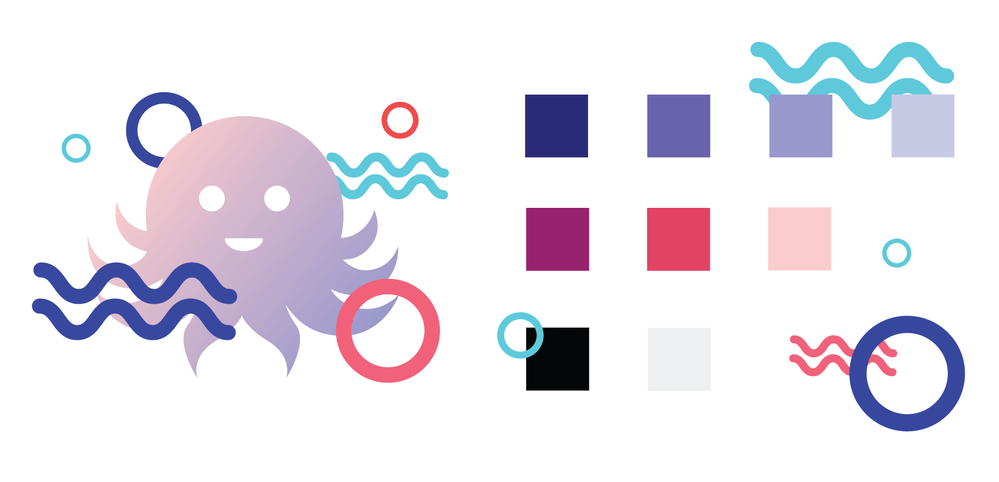
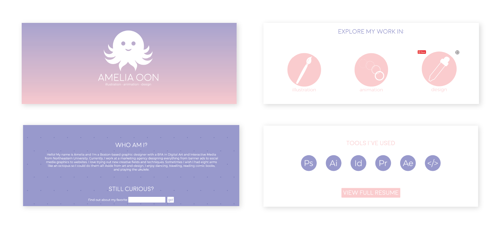
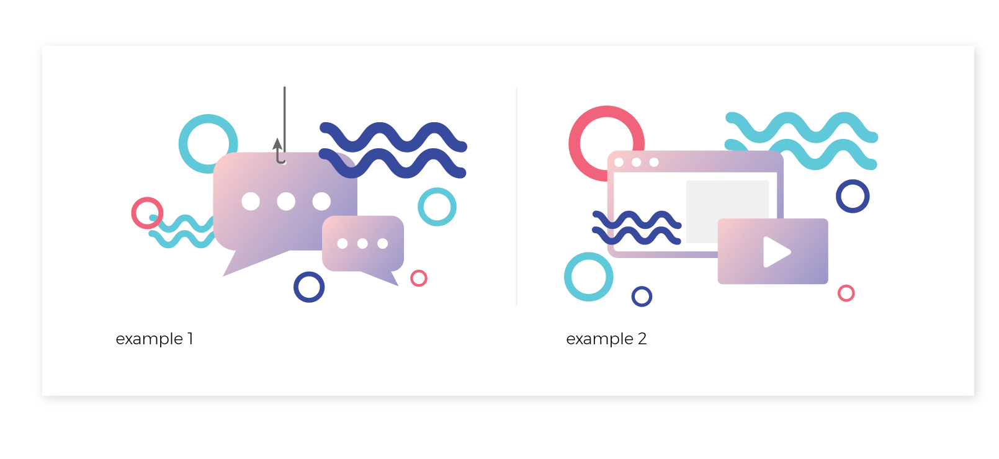

branding for personal/professional website
When I set out to develop my personal brand, I wanted to keep some elements from the previous iteration of my website, especially the octopus logo that I had developed. Working a bit backwards, I thought through how I wanted to present myself as a creative and how I could tie it back to the logo. Because I am still in an exploratory phase in my career, I thought that the octopus could represent my tendency to try different creative mediums. I would position myself as a creative with multiple arms to take on a variety of creative disciplines.
Below: Screenshots of old website

While I wanted to keep the pink and purple colors from the previous iteration of my site, I knew I needed to build out the color palette to not only add variety, but also to make room for better contrasting color combinations. I introduced darker tones of the existing pink and purple and added some brighter accents to reflect a more fun side of me. I also added some visual elements that resemble bubbles and waves, which could be used as design elements for future collateral. I then set an illustration style combining the soft pink and purple gradient from the full-color logo with the bright design elements.
Below: New illustration style

In addition to creating bubble and wave design elements, I also incorporated ocean-related wordplay into my copy to commit to the theme and add a playfulness to the brand.
Dive into the full brand guide!